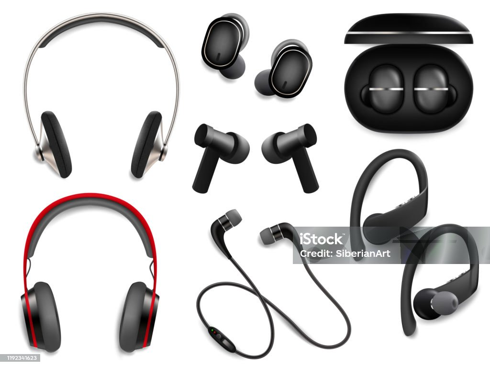

Yoursco Technologies üõ†Ô∏èüíªüì± offers professional repair services for all your phones and Computer devices. We‚Äôre more than just a repair service‚Äîwe‚Äôre your reliable tech companion.
Why Choose Us?
- Expert Technical Skills: Our skilled professionals are equipped to handle all types of repairs, from simple fixes to complex issues on phones and computers.
- Quality Assurance: We use genuine parts and ensure top-notch service. Also offer a wide selection of phones and computers from leading brands, ensuring you get the best in the market.
- Customer-Centric Approach: Your happiness is our priority. We strive to provide exceptional service and support every step of the way.
Our Services Include:
- Comprehensive repair services and maintenance on phones and computers.
- Sales of new and certified pre-owned devices.
- Trade-in options for your old gadgets.
- Sales of accessories and peripherals of phones and computers to complement your productivity and daily outputs.
Home Services
At Yoursco, we’re passionate about keeping you connected and productive. Whether you’re facing a cracked phone screen, a sluggish laptop, or any other tech hiccup, we’ve got your back. Our home services are designed to make your life easier:
- Phone Sales and Repairs: Looking for a new smartphone? We’ve got the latest models from top brands. Need a repair? Our skilled technicians can handle everything—from screen replacements to battery fixes. Your phone will be back in action in no time.
- Computer Sales and Upgrades: Upgrade your computing experience with our range of desktops, laptops, and accessories. Whether you’re a student, a professional, or a gaming enthusiast, we’ve got the right tech for you.
- Comprehensive Diagnostics: Not sure what’s wrong with your device? Our diagnostic services pinpoint the issue. We’ll provide transparent insights and recommend the best course of action.
- Virus Removal and Security Enhancements: Worried about malware or viruses? Let us clean up your system and fortify it against future threats. Your data deserves protection.
- Data Recovery: Accidentally deleted important files? Don’t panic! Our data recovery experts can retrieve lost data from hard drives, SSDs, and memory cards.
- Custom-Built PCs: Need a powerhouse for video editing or gaming? We’ll build a custom PC tailored to your needs. Say goodbye to one-size-fits-all solutions.
- Software Installation and Updates: Keep your software up to date and optimized. From operating systems to productivity tools, we’ve got you covered.
Sales of Phone and Computer Accessories
For every purchase you make, we will ensure there are no damages or faults and we will check and test the pitch of your instrument.
Wireless Bluethoot
#6,000 - #12,000
Phone Chargers
Selling -15% discount
Protective Pouches